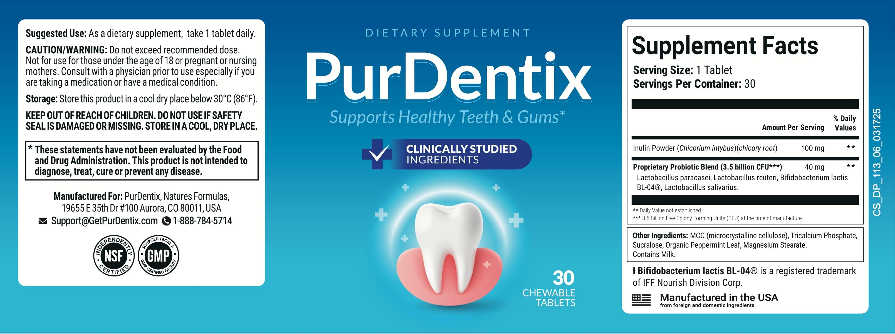

Ingredients
The PurDentix Label: Inulin, Four Probiotic Strains And Mint
The bottle label lists two active lines and a tablet base. The seller's page names the same strains but gives no amounts, so we follow the label.*

| PurDentix Supplement Facts, as printed on the bottle label | Amount |
|---|---|
| Serving size | 1 tablet (chewable) |
| Servings per container | 30 |
| Inulin powder (Cichorium intybus, chicory root) | 100 mg |
| Proprietary probiotic blend | 40 mg, 3.5 billion CFU (at the time of manufacture) |
| Blend contains | Lactobacillus paracasei, Lactobacillus reuteri, Bifidobacterium lactis BL-04, Lactobacillus salivarius |
| Other ingredients | Microcrystalline cellulose, tricalcium phosphate, sucralose, organic peppermint leaf, magnesium stearate |
| Allergen | CONTAINS MILK |
| Daily Values | Not established for any line |
How to read it: the label gives one amount for the four-strain blend, 40 mg in all, with no split between strains. 3.5 billion CFU is the count at manufacture, and live counts fall with time and warmth. Only one strain, BL-04, has a strain name.
Directions (label): as a dietary supplement, take 1 tablet daily. Do not exceed the recommended dose. Store in a cool, dry place below 30 C (86 F). Keep out of reach of children. Not for those under 18 or pregnant or nursing mothers, and consult a physician first, especially with a medication or medical condition.
At A Glance
| Item | Amount | Worth knowing |
|---|---|---|
| Chicory root inulin | 100 mg | A prebiotic fibre; may cause gas. |
| Probiotic blend, 4 strains | 40 mg, 3.5 billion CFU | Strains mostly unnamed; counts fall with time. |
| Organic peppermint leaf | Not given | Flavour. |
| Sucralose | Not given | Artificial sweetener. |
| Microcrystalline cellulose, calcium phosphate, magnesium stearate | Not given | Tablet base. |
| Milk | Allergen | Not for milk allergy. |
See also: Milk allergy and sweetener · Probiotics and weak immunity
What Stands Out
Only about 140 mg of actives per tablet, a probiotic blend with no strain split, a milk allergen and an artificial sweetener. See oral probiotics, what studies show.
See also: Probiotics and weak immunity · Oral Claims We Skip
General evidence.
The label by type.
*These statements have not been evaluated by the Food and Drug Administration. This product is not intended to diagnose, treat, cure or prevent any disease. Results vary from person to person.